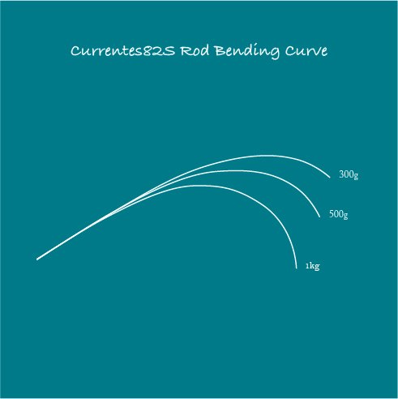
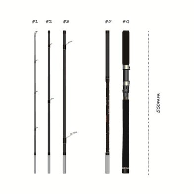
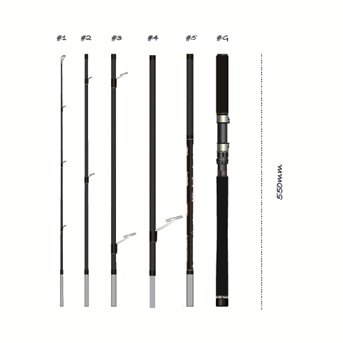

カレンテス82S+
（Currentes82S+ Rev.2）
カレンテス82S+は、パックロッド専門ブランドTRANSCENDENCE（トランスセンデンス）の、シーバス用スピニングロッドです。
ピースの組み替えで8.2ftと9.8ftの2つの長さに変えられる「2in1」で、仕舞寸法は550mm。国内の釣行から出張、海外遠征まで、機内に持ち込めるサイズで持ち運べます。トランスセンデンスのマルチピースのノウハウを詰め込んだ、「簡単には折れない」スタンダードなロングのパックロッドです。

画像出典:TRANSCENDENCE公式HP
※画像はパタゴニアでのキングサーモンの釣果（公式HPより）。
スペック
- メーカー
- TRANSCENDENCE（トランスセンデンス）
- タイプ
- スピニングロッド（シーバス・2in1可変レングス）
- 長さ
- 8.2ft／9.8ft
- 継数
- 6ピース（8.2ftは5ピースで使用）
- 仕舞寸法
- 550mm
- 自重
- 213g（8.2ft）／245g（9.8ft）
- ルアー重量
- 8〜35g
- PEライン
- 0.8〜2号
- ガイド
- チタン・SiCガイド混合（トルザイトリング）
- ターゲット
- シーバス・マゴチ・ヒラメ・マダイ・トラウト類など
- 価格
- 71,500円（税込）
▼今すぐチェック
カレンテス82S+の特徴
持ち運べて、簡単には折れない。シーバスのためのロングのパックロッド
-
1本で2本分の「2in1」
#1・#2・#3・#5とグリップで8.2ft、そこに#4を足すと9.8ft。8.2ftは先の強いテーパー、9.8ftはバットまで曲がるレギュラーテーパーで、ほとんど別のロッドといえるほど性格が違う。
-
感度と飛距離を両立したブランク
高弾性カーボンを主に使い、余計なものを削って感度を追求。ガイドにはトルザイトリングを多く使って軽くしている。両方の長さで使う#5は、飛距離と魚を浮かせる力を両立させるために一番時間をかけたピース。
-
可変型バランサーシステム
グリップのバランサーウェイトを調整できるので、8.2ft・9.8ftそれぞれで手元のバランスを自分好みに合わせられる。長い9.8ftでも持ち重りしにくい。
300g・500g・1kgの荷重をかけたときの8.2ftの曲がり方です。重くなるほどバット側まで曲がり込んでいきます。

画像出典:TRANSCENDENCE公式HP
8.2ftと9.8ftの使い分け
| 長さ | 組み合わせ／自重 | 得意な場面 | 対象魚（公式） |
|---|---|---|---|
| 8.2ft | #1+#2+#3+#5+グリップ／213g | 港湾・小規模河川・ボートシーバス。短い距離のアンダーハンドやサイドキャスト | シーバス・マゴチ・ヒラメ・マダイ・トラウト類・バラマンディなど |
| 9.8ft | #1〜#5+グリップ（#4を追加）／245g | サーフなどの広い場所。28g以上のジグやシンキングペンシルの遠投 | シーバス・マゴチ・ヒラメ・マダイ・トラウト類など |

画像出典:TRANSCENDENCE公式HP

画像出典:TRANSCENDENCE公式HP
※TRANSCENDENCE公式HPの記載より。仕舞寸法はどちらも550mmです。
カレンテス82S+の使い方
8.2ftは、港湾や小規模河川、ボートシーバスで使う長さです。8g前後のルアーでもブレイクラインまで飛ばせて、28gのバイブレーションも扱えます。頭上に障害物がある場所では、先の強さを生かしてアンダーハンドやサイドキャストで低く正確に打ち込むのが持ち味です。
9.8ftは飛距離を重視した長さ。サーフから28g以上のジグやシンキングペンシルを遠投でき、魚が掛かるとロッド全体で引きを吸収してくれます。
カレンテス82S+がおすすめの人
出張や旅行、海外遠征にもシーバスロッドを持って行きたい人におすすめです。
パックロッドでも港湾向けの8.2ftとサーフ向けの9.8ftを1本でまかなえるので、行き先の釣り場が分からない遠征でも頼りになります。公式では、想定より大きいキングサーモンやアカメにも対応すると紹介されています。
ワンポイント
長さを組み替えたら、グリップのバランサーウェイトも合わせて調整しましょう。9.8ftにしたときはウェイトを足して手元を重くすると、穂先の持ち重りが減ってキャストや操作がラクになります。8.2ftでは軽めにして、感度とキビキビした操作感を生かすのがおすすめです。
カレンテス82S+に合わせたいリール
PE0.8〜2号・8〜35gのシーバスロッドなので、3000番クラスのスピニングリールが基準です。ロッドが213g（8.2ft）・245g（9.8ft）と軽めなので、リールも軽いものを合わせると1日投げ続けても疲れにくくなります。
| リール | 合わせたい理由 |
|---|---|
| シマノ 24ツインパワー C3000MHG |
自重215gの軽さと、ツインパワーらしい剛性。港湾や河川で使う8.2ftにちょうどいいバランス。 |
| ダイワ 24セルテート LT3000番クラス（ハイギア） |
タフさに定評のあるセルテート。遠征先でもトラブルの少ない1台を選ぶなら。 |
サーフで9.8ftを中心に使い、PE1.5〜2号を多めに巻きたいなら、ひとつ大きい4000番クラス（24ツインパワー 4000MHGなど）も候補です。
※リールの重さ・糸巻量・ドラグはメーカーの公表値です。最新のラインナップは各メーカーの公式サイトで確認してください。
▼今すぐチェック
カレンテス82S+とあわせてチェックしたいアイテム
-
 ディアルーナ MB
シマノ
詳細はこちら＞
ディアルーナ MB
シマノ
詳細はこちら＞
4ピースのシーバスパックロッド。長さ違いの4機種から選べる。
-
 フージンZ EXIV
アピア
詳細はこちら＞
フージンZ EXIV
アピア
詳細はこちら＞
アピアのフラッグシップを4本継にした限定パックロッド。
-
 ディアナクト 85ML5
GOTO9
詳細はこちら＞
ディアナクト 85ML5
GOTO9
詳細はこちら＞
仕舞寸法59cmの5ピースのシーバスロッド。